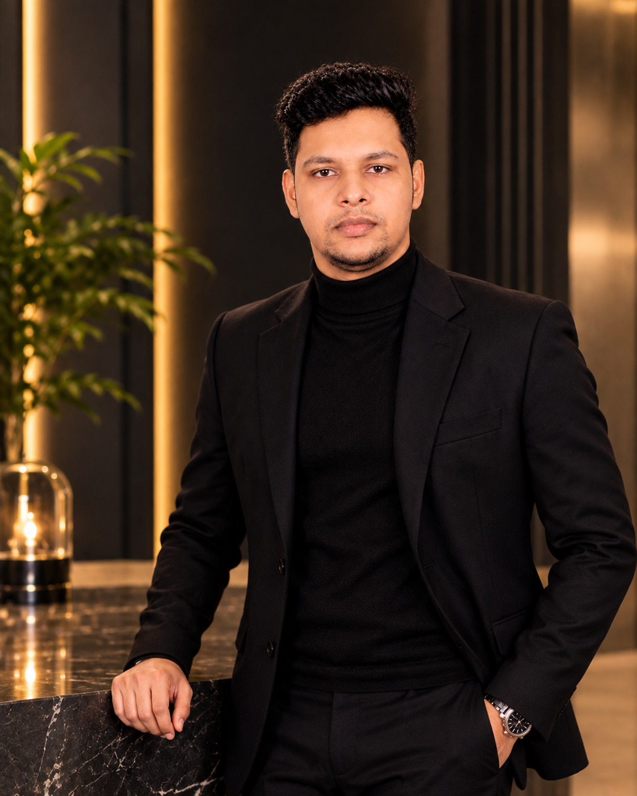

June – September 2026
Grill Chef
SEK Paralimni · Cyprus
Prepared and grilled meats, assembled skewers, operated fryers, plated meals, prepared salads, and maintained kitchen hygiene during service.
Hospitality professional and tourism management student in Cyprus, bringing together practical service experience, academic learning, and a growing interest in the guest experience.

A path shaped by technical education, hands-on hospitality work, and a growing academic interest in tourism and service management.
I am currently pursuing a BA in International Tourism and Hospitality Management at City Unity College Nicosia. My practical experience includes restaurant kitchen operations, food preparation, grilling, and supporting service teams.
My earlier studies in automotive engineering and experience in graphics and digital design have also helped me develop technical skills, attention to detail, and an appreciation for clear communication and presentation.
Practical roles that introduced me to restaurant operations, service standards, food preparation, and teamwork.
Prepared and grilled meats, assembled skewers, operated fryers, plated meals, prepared salads, and maintained kitchen hygiene during service.
Maintained hygiene, supported waiters during busy periods, helped with food service, and assisted kitchen and front-of-house operations.
Academic foundations and practical training supporting my continued development in hospitality and tourism.
City Unity College Nicosia · Cyprus
Dhaka Polytechnic Institute · Bangladesh
Beacon Academy · Bangladesh
Beacon Academy · Bangladesh
Practical capabilities and areas of interest that connect my hospitality experience with my academic direction.
Kitchen preparation · Food safety & hygiene · Team support · Restaurant service
Grilling & BBQ · Pizza preparation · Barista skills · Mocktail preparation
Graphic design · Microsoft Office · Social media communication · Time management
Selected themes from coursework and learning exercises. These are presented as academic learning—not published research or professional consulting.
Exploring how tourism destinations identify risks and consider their impact on visitors, businesses, and destination operations.
Learning how visitor spending contributes to tourism activity and how tourism-related economic measures can be interpreted.
Considering how reviews, service quality, and digital communication shape perceptions of hospitality businesses.